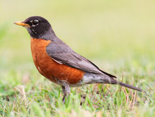
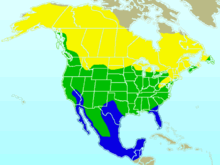

| American Robin | |
|---|---|
|  | |
| Adult | |
| Conservation status | |
| Binomial name | |
| Turdus migratorius Linnaeus, 1766 |
|
|  | |
| Synonyms | |
|
Merula migratoria |
The American Robin or North American Robin[2] (Turdus migratorius) is a migratory songbird of the thrush family. It is named after the European Robin[3] because of its reddish-orange breast, though the two species are not closely related, with the European robin belonging to the flycatcher family. The American Robin is widely distributed throughout North America, wintering south of Canada from Florida to central Mexico and along the Pacific Coast. It is the state bird of Connecticut, Michigan, and Wisconsin.[4] It has seven subspecies, but only T. m. confinis in the southwest is particularly distinctive, with pale gray-brown underparts.
The American Robin is active mostly during the day and assembles in large flocks at night. Its diet consists of invertebrates (such as beetle grubs and caterpillars), fruits and berries. It is one of the earliest bird species to lay eggs, beginning to breed shortly after returning to its summer range from its winter range. Its nest consists of long coarse grass, twigs, paper, and feathers, and is smeared with mud and often cushioned with grass or other soft materials. It is among the first birds to sing at dawn, and its song consists of several discrete units that are repeated.
The adult robin is preyed upon by hawks, cats and larger snakes, but when feeding in flocks, it is able to be vigilant and watch other birds for reactions to predators. Brown-headed Cowbirds lay eggs in robin nests (see brood parasite), but robins usually reject the cowbird eggs.
{kind=link}
{kind=link}